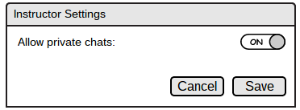
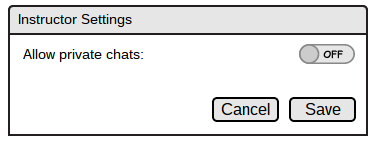

2.7.3. Instructor Question Management and Control
The instructor is given a special settings icon that replaces the question icon as shown in Figure 86. When this settings icon is clicked, a dialog box pops up with settings to allow or disallow private chats. This is shown in Figures 92 and 93.

Figure 92: Instructor Settings with ON

Figure 93: Instructor Settings with OFF
The instructor may then click on the Save button to commit the changes or the Cancel button to exit the window without committing any changes.
Also, the instructor is notified of any questions through the roster and is thoroughly explained in the "Question Queueing" section under "Managing the Roster."
For reference and clarity, the sections below demonstrate a question/answer session between instructor and students.
In the Expanding and Collapsing section, both student and instructor presentation windows with actual lecture content are shown to provide context for a question/answer session.
As shown under the Expanding and Collapsing section, the student has access to the chat and may ask a question that notifies the instructor through the roster. Also, a student may draw on the lecture to refer to his/her question and then the drawing layer may be enabled by the instructor to be displayed on the main screen. This is again explained in the section noted above.
In the Question Queuing section, there is a concrete example of a roster with an ample number of students in it.
When a question is asked, the Instructor is notified by the Roster with flashing yellow lights next to a student's name. This is shown in Figure 4 of the Question Queuing section.
The instructor may then resolve the question by clicking on the student's name on the roster to open the question dialog box. Again, this is all explained in the section noted above.
Thus, these sections together represent a step-by-step presentation of a question/answer session involving the instructor and successive participation of couple students.
Prev: asking-chat
| Next: private-chat
| Up: Chatbox
| Top: index